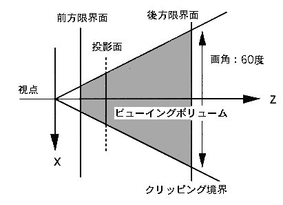

Return to previous page | Return to menu | Go to next page
void
Graphic function
Setting the perspective conversion table
void slPerspective(pers)
ANGLE pers ;
pers angle of view Scope: 10 to 160 (Unit: DEG)
Set the distance constant to the screen used for perspective transformation. None
By using “slWindow” and “slZdspLevel” with the function “slPerspective”, the viewing volume can be completely determined.  Reference: Chapter 4 Coordinate transformation slPerspective
Return value
Remarks
The image model for perspective transformation is shown below.